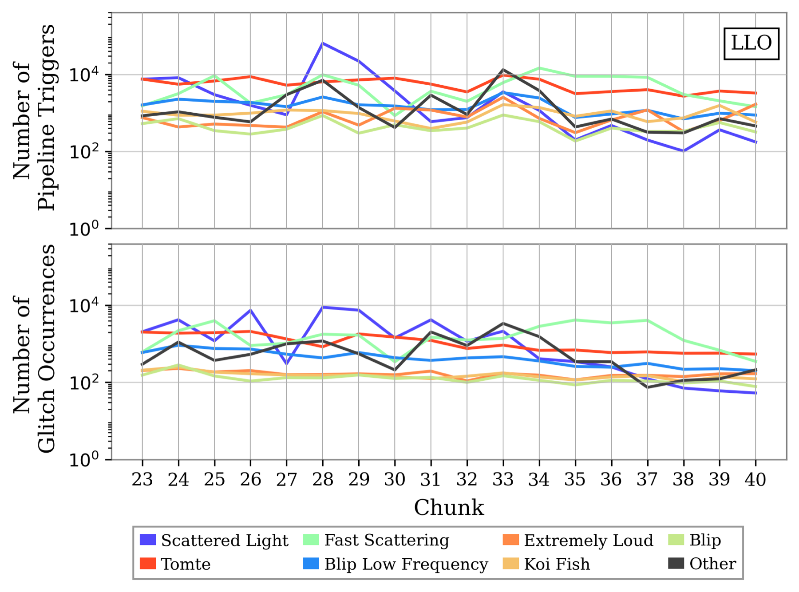
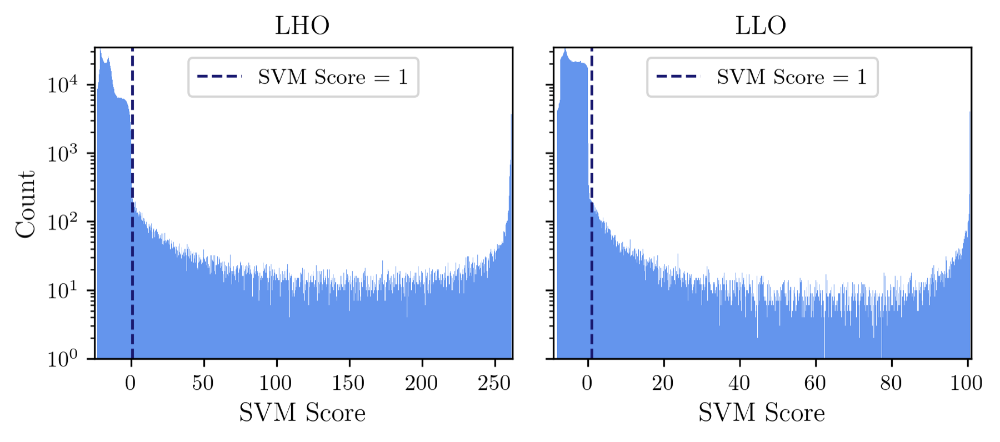
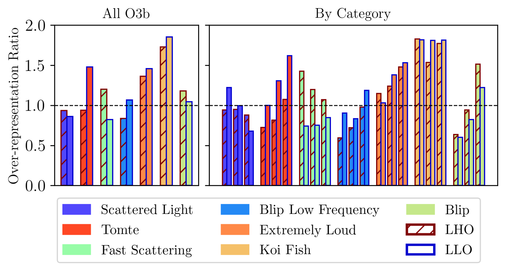
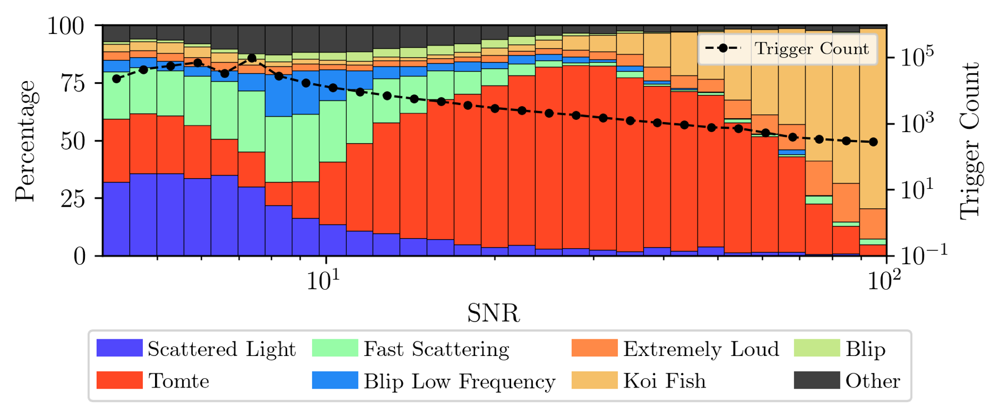
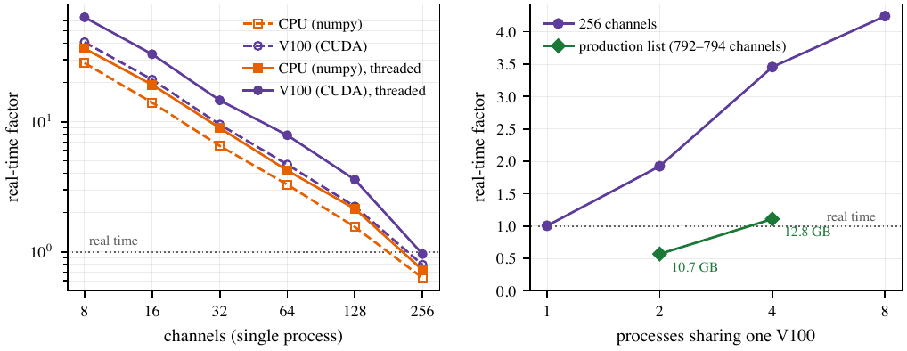
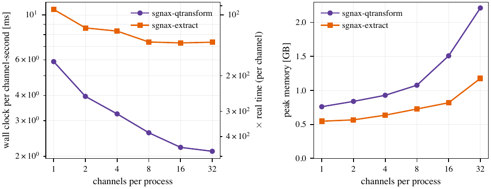

Selected figures from my papers, with plain-language captions. Each one links to the paper it comes from.
How glitches reach a search (PINCH)

Glitch occurrences and the triggers they cause, over O3b at LIGO Livingston. Trigger counts mostly follow how often a glitch occurs. Some classes, such as Extremely Loud, Koi Fish and Tomte, couple to the search consistently, while scattered-light glitches vary with time.

Separating glitch triggers from ordinary noise. SVM scores for triggers that overlap glitches. Scores above 1 mean a trigger looks unlike those from clean data, so it was likely caused by the glitch.

Which glitches punch above their weight. Over-representation ratio by glitch class, overall and split by BNS, NSBH and BBH searches. Blips matter most for BBH searches, while Fast Scattering and Extremely Loud glitches matter most for BNS searches.

Which glitches make loud triggers. SNR distribution of glitch-induced triggers at Livingston over O3b, colored by glitch class. Tomte dominates at moderate SNR, while Extremely Loud and Koi Fish glitches make up most of the loudest triggers. All PINCH figures are from Yarbrough et al. 2025, CQG.
Real-time detector characterization (sgnax)

An entire auxiliary channel list on one GPU. Streaming real-time factor of the sgnax Q-transform on one NVIDIA V100. Splitting the channel list across four processes analyzes 792 production auxiliary channels faster than real time.

Channels get cheaper in bulk. Because every branch shares one data-read and whitening front end, the cost per channel drops as channels are added: 2.8 times lower for the Q-transform at 32 channels than at one. From Yarbrough et al. 2026.